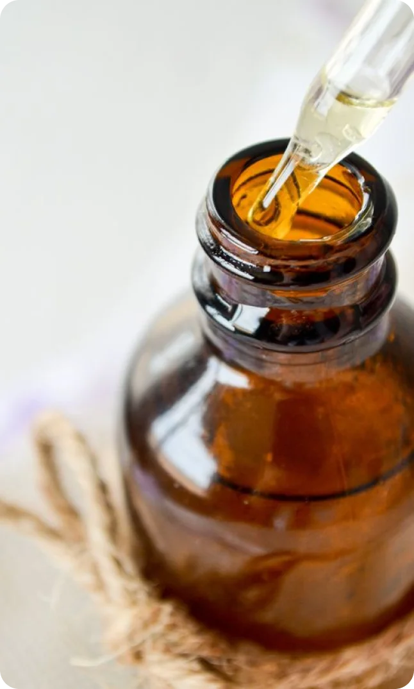
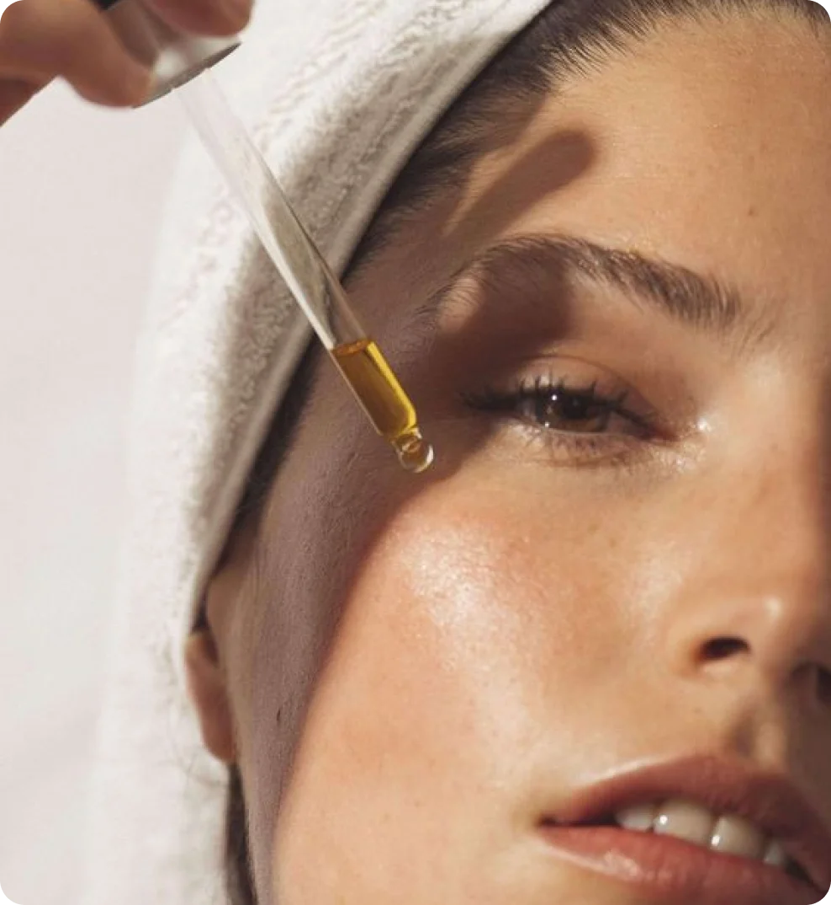

26 марта 2024
вещества
Глицерин - один из самых популярных ингредиентов в уходовой косметике, и это не удивительно, учитывая его многочисленные благотворные свойства для кожи. Но что такое глицерин, как он действует на кожу, почему он важен, и как его использовать для различных типов кожи?
Описание
Глицерин – трехатомный спирт, в химической формуле которого (C3H8O3) содержатся три молекулы воды, благодаря которым вещество активно удерживает влагу, препятствуя ее трансэпидермальной потере. Именно это свойство, в первую очередь, объясняет популярность глицерина в косметической промышленности.
Глицерин притягивает влагу из окружающей среды и проникает в верхние слои кожи, увлажняя и смягчая ее. Это делает его отличным ингредиентом для увлажняющих и смягчающих кожу продуктов. Кроме того, глицерин способствует укреплению защитного барьера кожи, что помогает предотвратить потерю влаги и защищает от вредного воздействия окружающей среды.
Обозначение в составе
На упаковках уходовых средств, в составе которых содержится этот компонент, должно быть написано Glycerin.
 
Где содержится
Глицерин — практически универсальный ингредиент в уходовой косметике, поэтому он широко используется в различных косметических продуктах, таких как увлажняющие кремы, лосьоны, тоники, маски, гели для душа и многие другие. Он также часто присутствует в продуктах для ухода за волосами, таких как кондиционеры и маски.
Применение
Глицерин играет ключевую роль в уходе. Его можно использовать при уходе за кожей любого типа, особенно за сухой или чувствительной. Он помогает сохранить уровень увлажненности кожи, предотвращает ее сухость, шелушение и раздражение.
Несмотря на то, что компонент является безопасным и подходит людям с разными типами кожи, рекомендуем сначала проверить его на отсутствие аллергических реакций на маленьком участке кожи.
Глицерин отлично подходит для ухода за сухой кожей благодаря своим увлажняющим свойствам. Используйте увлажняющие кремы и лосьоны с высоким содержанием глицерина, чтобы поддерживать уровень увлажненности кожи, а также избавиться от ощущения стянутости кожи.
Некомедогенные гели для умывания с глицерином в составе помогут предотвратить обезвоженность кожи. Также в систему ухода за жирной кожей можно добавить легкие увлажняющие кремы с глицерином в составе.
Глицерин хорошо подходит для ухода за чувствительной кожей, поскольку он увлажняет ее, смягчает и предотвращает раздражения. Однако рекомендуем проверить состав продуктов на наличие других потенциально раздражающих ингредиентов, чтобы избежать аллергических реакций.